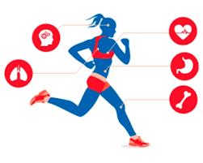
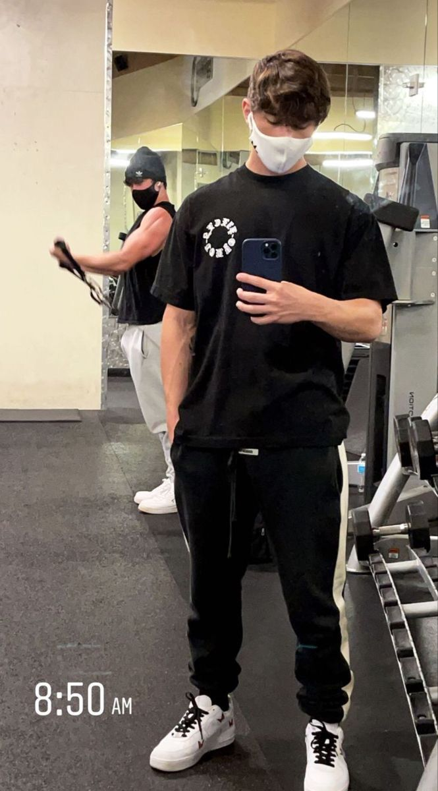
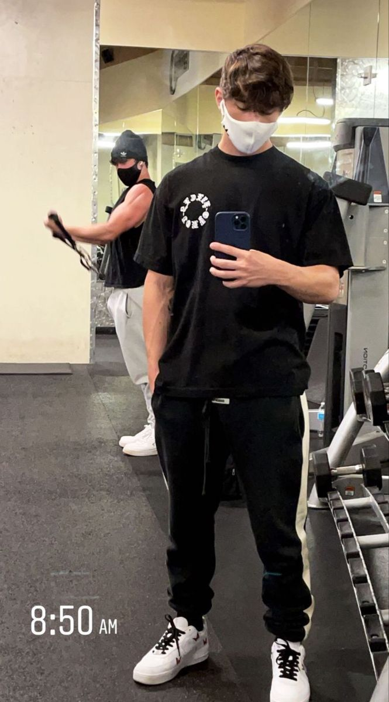

L’exercice physique quotidien est un moyen d’améliorer la santé car il agit sur différents fronts.
Certains avantages de l'activité physique pour la santé mentale se produisent immédiatement après une séance d'activité physique modérée ou intense. Ces avantages comprennent une meilleure capacité à penser ou des capacités cognitives chez les enfants âgés de 6 à 13 ans et moins de sentiments d'anxiété à court terme chez les adults. Une activité physique régulière peut vous aider à garder vos capacités de réflexion, d'apprentissage et de jugement au fil des ans. Il peut également réduire votre risque de dépression et d'anxiété, tout comme vous aider à mieux dormir.
Il réduit la pression artérielle, favorisant le contrôle de l’hypertension. Il augmente la sécrétion de bon cholestérols, réduisant le taux de cholestérol dans le sang. Il induit une diminution des taux de triglycérides. Il diminue la production d’insuline, aidant à contrôler le diabète du type 2 et favorisant l’assimilation des nutriments et leur arrivée dans les cellules des différents tissus, en plus de réduire la captation et l’accumulation de graisse.
1.-Les poivrons farcis au four. Dans ce cas, ils sont farcis de riz, de viande hachée et de légumes, puis rôtis. Vous pouvez ajouter du safran, qui peut ajouter une touche supplémentaire de saveur et de couleur au riz. Ou tout simplement de la tomate. Ils sont très faciles à faire et en une heure, ils seront servis à table.
2.Le thon grillé à l’ail et au persil. Le thon est déjà un aliment très riche et sain, cette vinaigrette va également vous apporter beaucoup de saveur et de nutriments. Il est cuit en quelques minutes et ne nécessite pas beaucoup de préparation. Si vous aimez le poisson, le thon grillé à l’ail et au persil est un choix très facile à faire, sain et délicieux.
3.-Biscuits à l’avoine et à la banane sans sucre. En fait, c’est une recette très simple. Il est fait avec seulement 3 ingrédients. Il ne contient pas d’oeuf, et donne toujours un très bon résultat.


 


les outfits sont choisies dans le but de pouvoir être à l’aise en faisant l’activité choisie et pour avoir l’air bien. Il y a quelques couleurs que vous ne devriez en aucun cas combiner.
Somme couleurs que vous ne dérivez pas sont:
brun et noir. Rouge et orange. Vert et orange. Vert et rose. Rouge et vert. Bleu et noir. Gris et noir. Brun et gris. Violet et jaune. Violet et brun. Bleu et rose. Brun et rouge.
Quelques outfits de femme pour la gym sont:
1.-Legging avec haut à manches longues
2.-Short avec haut et sweat superposé
3.-Short avec Hoodie
Quelques outfits pour l'homme sont:
1.-T-shirt, sweat-shirt et shorts
2.-T-shirt et jogging
3.-T-shirt sans manches et shorts.
Les hommes décident s’ils veulent enlever leur t-shirt ou non. Pour faire de l’exercice à la salle de gym, il faudrait des tennis confortables pour ne pas se blesser les pieds